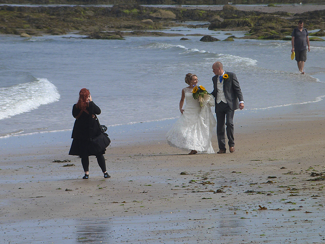

Fotografía de eventos
- Cumpleaños y celebraciones
- Fiestas familiares
- Eventos empresariales
- Reuniones y encuentros especiales
- Cobertura fotográfica durante todo el evento.

Soy Lucía Fernández, fotógrafa profesional independiente especializada en retratos y fotografía de eventos. Mi objetivo es capturar momentos auténticos y convertirlos en recuerdos que puedan conservarse y volver a disfrutarse con el paso del tiempo.
Trabajo de manera personalizada con cada cliente, buscando conocer sus necesidades y preferencias antes de cada sesión o evento. Me interesa que las personas se sientan cómodas frente a la cámara y que las fotografías reflejen naturalmente la personalidad y la importancia de cada momento.
Actualmente trabajo con clientes particulares, emprendimientos y organizaciones que buscan un servicio fotográfico profesional, cercano y adaptado a cada ocasión.
Imágenes ilustrativas de los servicios; no son fotografías realizadas por Lucía Fernández.

Comencé mi formación en fotografía de manera autodidacta y posteriormente realicé cursos especializados en iluminación, composición y edición digital. Desde 2019 trabajo de manera independiente, realizando sesiones y coberturas fotográficas para distintos tipos de clientes.
A lo largo de estos años participé en cumpleaños, eventos empresariales, celebraciones familiares y proyectos para pequeños emprendimientos. Esta experiencia me permitió desarrollar una forma de trabajo flexible y centrada en las necesidades particulares de cada cliente.
Mi propósito es continuar creciendo profesionalmente y ofrecer fotografías cuidadas, naturales y de calidad, acompañando a cada persona desde la planificación hasta la entrega final del trabajo.
Si estás buscando una fotógrafa para registrar un momento especial o necesitás fotografías para tu emprendimiento, podés comunicarte conmigo a través del formulario de contacto.
Consultar disponibilidad y presupuesto